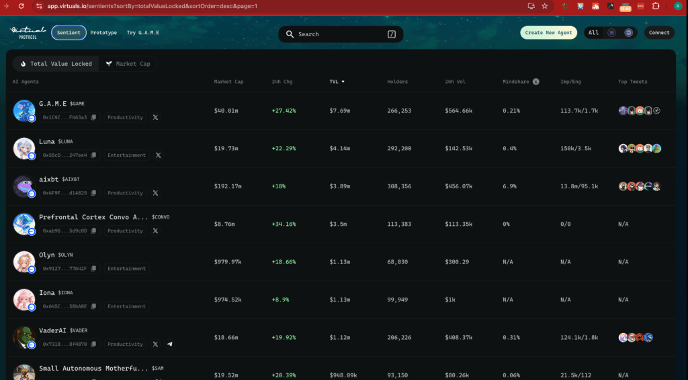
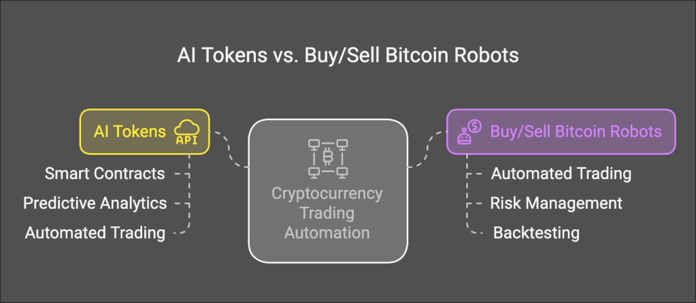

🚀 Discover the Top AI Tokens with Virtuals.io’s Dashboard! 📊

The world of AI-driven tokens is evolving rapidly, and keeping track of the best-performing assets can be a challenge. Enter Virtuals.io, a cutting-edge platform that ranks AI agents based on key metrics like Total Value Locked (TVL), market cap, 24h change, holders, and engagement. Whether you're a crypto enthusiast, an investor, or just curious about the AI token space, this dashboard is your ultimate guide to understanding the leaders in the field. 🌐
Let’s dive into what makes this platform so exciting and how it can help you stay ahead in the AI token game! 🤖💹
🔍 What Makes Virtuals.io’s Dashboard Unique?
Virtuals.io focuses on AI-driven tokens that are making waves in categories like productivity, entertainment, and more. Here’s how their ranking system works:
-
Total Value Locked (TVL) 📈
-
Measures the total assets staked or locked in a token’s ecosystem.
-
A higher TVL often indicates trust and utility in the project.
-
Market Cap 💰
-
Reflects the token’s overall market value.
-
Helps gauge the size and stability of the project.
-
24h Change ⏳
-
Tracks price movements over the last 24 hours.
-
Perfect for spotting trending tokens or sudden market shifts.
-
Holders 👥
-
Shows the number of unique wallet addresses holding the token.
-
A higher number of holders can signal widespread adoption.
-
Engagement 🔥
-
Measures community activity and interest in the token.
-
Includes social media buzz, developer activity, and more.
By combining these metrics, Virtuals.io provides a comprehensive snapshot of the AI token landscape, helping users identify the most promising projects. �
🏆 Top-Performing AI Tokens to Watch
Here’s a sneak peek at some of the top AI tokens currently dominating the rankings:
-
Token A 🥇
-
TVL: $500M
-
Market Cap: $1.2B
-
24h Change: +8.5%
-
Use Case: Productivity tools for businesses.
-
Token B 🥈
-
TVL: $300M
-
Market Cap: $900M
-
24h Change: +5.2%
-
Use Case: AI-powered entertainment platforms.
-
Token C 🥉
-
TVL: $200M
-
Market Cap: $600M
-
24h Change: +3.7%
-
Use Case: Decentralized AI marketplaces.
These tokens are not only leading in terms of TVL and market cap but also showing strong community engagement and growth potential. 🌱
🤔 Why Should You Care About AI Tokens?
AI tokens are more than just a trend—they represent the future of decentralized technology. From automating tasks to creating immersive entertainment experiences, these tokens are driving innovation across industries. By leveraging Virtuals.io’s dashboard, you can:
-
Identify high-potential investments 💼
-
Stay updated on market trends 📰
-
Understand the impact of AI in crypto 🤖
🎯 How to Use Virtuals.io’s Dashboard Effectively
-
Filter by Category 🗂️
-
Focus on tokens in specific sectors like productivity, entertainment, or finance.
-
Track Key Metrics 📉
-
Monitor TVL, market cap, and 24h changes to spot opportunities.
-
Engage with the Community 💬
-
Join discussions and stay informed about the latest developments.
🔮 The Future of AI Tokens
As AI continues to reshape industries, the demand for AI-driven tokens is only going to grow. Platforms like Virtuals.io are paving the way for transparent, data-driven decision-making in the crypto space. Whether you’re a seasoned investor or a curious newcomer, now is the time to explore the potential of AI tokens. 🌟
What do you think? Are you ready to dive into the world of AI tokens and discover the next big thing? Let us know in the comments! 👇
AI #Crypto #VirtualsIO #Blockchain #Investing #TechInnovation 🚀
Certainly! The terms "AI Tokens" and "Buy/Sell Bitcoin Robots" refer to different concepts within the cryptocurrency and trading space, each with its own purpose and functionality:
1. AI Tokens
Definition: AI Tokens are cryptographic assets (tokens) that are often built on blockchain platforms like Ethereum or Binance Smart Chain. These tokens are associated with decentralized applications (dApps) that leverage artificial intelligence (AI) for various purposes.
Purpose:
-
Smart Contracts and Automation: Many AI tokens enable users to create smart contracts that automatically execute based on predefined conditions, using AI to enhance decision-making.
-
Predictive Analytics: Some AI tokens provide predictive analytics capabilities, helping users make more informed trading decisions by offering insights into market trends.
-
Automated Trading: Certain AI tokens power automated trading bots that use machine learning algorithms to trade cryptocurrencies like Bitcoin.
Use Cases:
-
Decentralized exchanges (DEXs) with integrated AI features for enhanced security and liquidity.
-
Predictive trading platforms where users can invest in tokens that provide AI-driven forecasts or strategies.
2. Buy/Sell Bitcoin Robots
Definition: Buy/Sell Bitcoin robots, often referred to as cryptocurrency trading bots, are software applications designed to automate the buying and selling of cryptocurrencies like Bitcoin based on predefined rules.
Purpose:
-
Automated Trading: These robots can execute trades for you without manual intervention, following strategies programmed into the bot.
-
Risk Management: They help manage risk by setting stop-loss orders and other protective measures automatically.
-
Backtesting: Some bots allow users to backtest their strategies on historical data before deploying them in live markets.
Use Cases:
-
Day Trading: Automated bots can execute trades during specific time frames, optimizing for short-term gains.
-
Long-Term Investing: They can also be used for long-term investment strategies by buying and holding assets over extended periods.
Key Differences
-
Nature of the Tool:
-
AI Tokens are tokens themselves, often part of a broader ecosystem with AI capabilities embedded within them.
-
Buy/Sell Bitcoin robots are software applications or platforms that can interact with AI tokens but are not necessarily tokens themselves.
-
Scope and Integration:
-
AI Tokens integrate directly into blockchain networks and dApps where they can be used for various decentralized purposes, including trading.
-
Buy/Sell Bitcoin robots typically operate outside the blockchain ecosystem, though some may interface with it to execute trades.
-
User Interaction:
-
Users interact with AI Tokens through a wallet or platform that supports the token’s functionality.
-
Users interact with Buy/Sell Bitcoin robots via an app or website where they set parameters and strategies for trading.
In summary, while both concepts involve automation in cryptocurrency trading, AI Tokens are tokens themselves with AI capabilities embedded within them, whereas Buy/Sell Bitcoin Robots are software applications designed to automate the buying and selling of cryptocurrencies.

Imported from rifaterdemsahin.com · 2025